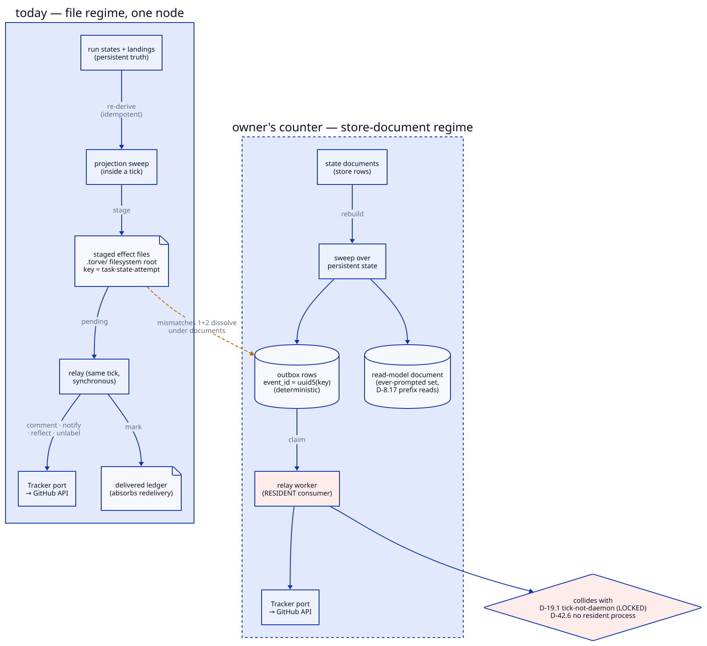

The tracker outbox — the contested design¶
A record, not documentation — 2026-09-03
The contest this page sets out is over. Derive-don't-record (S-0008/D-2) was retired by S-0044/D-3: facts are recorded when they become true, and rebuild is replay. The page is kept as the argument that produced that decision, including the counters that turned out to be right.
The tracker itself is deleted, not pending. The whole projection —
2,600 lines, both directions — was removed in September 2026 (S-0008
S-0008/A-5) after being inert in every repository torve runs. Its design
survives in S-0008 for whoever rebuilds it; what left with it is
named in S-0020/A-1, and includes intake by issue, the /torve commands and
the escalation paging S-0006 S-0006/D-11 still asks for.
The tracker projects engine state onto GitHub (issue comments, labels, notifications). Effects must survive a crash between "decided to comment" and "commented", and must not double-post on replay. That is the whole problem the outbox solves.

The design that emerged (S-0008/D-2)¶
- Derive, don't record. Effects are not captured at write time; a
projection sweep re-derives them from run states and landings, staging
idempotently under structured keys (
task_id · state · attempt). A lost outbox is rebuilt from state, never invented. - File regime. Staged effects are files under a filesystem root;
staged_keys()enumerates them, and the S-0008/D-17 clear rules are prefix tests over that set ("was this task ever prompted"). - In-tick relay. The same tick that stages also relays: direct, synchronous calls on the Tracker port, with at-least-once carried by deliver-then-mark-ledger. Failure stays pending and retries next tick, forever; a refused reflection is a logged divergence.
This is small (~180 lines plus the tracker sweep), crash-correct on one node, and its simplicity comes precisely from the rebuild-from-state property.
The S-0042/D-5 investigation (T-0246)¶
The question was whether forze_kits.integrations.outbox displaces this.
Verdict: no fit — four mismatches, of which the load-bearing three:
forze stages at write time from domain events (outbox table is the truth,
not re-derivable), keys on opaque UUIDs with a claim/mark-only query port
(no prefix reads), and relays to broker transports for a resident consumer.
Full evidence: .torve/tasks/T-0246/log.yaml.
The owner's counters (2026-09-04)¶
- State can be a document, not pure outbox — then outbox reconstruction is a sweep over persistent state.
- The key-prefix read is solved similarly by a document.
- The synchronous in-tick relay doesn't fit a distributed system.
Taken together these are a coherent store-document regime, and they change the verdict's weight distribution:
- Counters 1+2 dissolve mismatches 1+2. If run/tracker state lives in
store documents, the sweep re-derives into a store-backed outbox with
deterministic
event_id = uuid5(key)— staging stays idempotent and rebuildable (the property S-0008/D-2 exists for), and an "ever-prompted" read-model document serves the S-0008/D-17 prefix reads that forze's query port cannot. The T-0246 log itself found theuuid5half of this bridge and refused it only because the relay half stayed unmapped. - Counter 3 is the actual disagreement — and it is not about the outbox. The in-tick synchronous relay is a single-node assumption, chosen because S-0019/D-1 (tick-not-daemon, LOCKED) and S-0042/D-6 (no resident process) forbid the consumer that a distributed relay needs. forze's relay-with-consumer is the standard distributed shape; torve refused it to honor the residency doctrine, not because the shape is wrong.
So the honest restatement of S-0042/D-5 is: the no-fit verdict is correct conditional on the residency doctrine. Under a store-document regime with a resident relay worker, forze's outbox fits — mismatch 4 (the file-regime test suite as acceptance bar) is then just a test-migration cost, not an architectural argument.
What each path costs¶
| Keep S-0008/D-2 (file regime) | Store-document + forze outbox | |
|---|---|---|
| Crash safety | proven, one node | standard, any node |
| Moving parts | none beyond the tick | outbox table, read-model doc, relay worker |
| Residency | none (S-0019/D-1 intact) | resident consumer required |
| Multi-node | no — filesystem root, in-tick relay | yes |
| Failure policy | retry forever, divergence-log refusals | backoff → parked failed, operator requeue |
| Who owns delivery | the tick | the worker |
The failure-policy row hides a real semantic change: forze's default parks a
row as failed after max attempts — a GitHub outage would dead-letter the
board and add an operator step that S-0008/D-2's contract deliberately does not
have.
The decision this actually is¶
Whether to adopt forze's outbox is downstream of one question: does tick-not-daemon survive distribution? If the manager/connector direction (forze durable runner, chartered) brings resident workers anyway, the relay worker is one more, and the store-document regime is the natural shape. If S-0019/D-1 stays LOCKED as charter, S-0008/D-2 stays — and distribution of the tracker specifically is off the table while everything else distributes.
That question is taken up in The fault line.